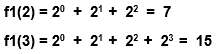
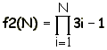

Objetivo:
Que apliques los conocimientos sobre los ciclos FOR y DO
WHILE en el desarrollo de un programa

Forma de
trabajo:
Actividad individual

Instrucciones:
- De manera individual, desarrolla el algoritmo y posteriormente el
programa completo en C para cada uno de los ejercicios que se presentan
a continuación.
- Entrega, vía la plataforma, los archivos *.c que contengan los
programas en C. Es importante que al inicio de cada programa coloques
el o los algoritmos que utilizaste.
Construye
un programa completo en C libre de warnings y errores, que incluya las
siguientes funciones y procedimientos:
- La función f1 que recibe un valor entero mayor o igual
a uno y utilizando un ciclo for regresa el resultado de la siguiente
sumatoria:

Por ejemplo:

- La función f2 que recibe un valor entero mayor o igual
a uno y utilizando un ciclo for regresa el resultado de la siguiente
multiplicatoria:

.
Por
ejemplo:
.
f2(2) =
(3(1)-1) * (3(2)-1) = 10
f2(4) =
(3(1)-1) * (3(2)-1) * (3(3)-1) * (3(4)-1) = 880
- La función f3 que recibe un valor entero mayor o igual
a uno y utilizando un ciclo for regresa el resultado de la siguiente
serie:
.
f3 ( n ) = 1 - 2 + 3 -
4 + 5 - ... n
Por ejemplo:
. f3( 1 ) = 1
f3( 2 ) = 1
- 2 = -1
f3( 3 ) = 1
- 2 + 3 = 2
f3( 4 ) = 1
- 2 + 3 - 4 = -2
- El procedimiento incremento que recibe 2 parámetros
reales, el límite inferior de la serie LI y el límite superior
de la serie LS.Y utilizando un ciclo for, el procedimiento
deberá desplegar en pantalla la secuencia de números desde LI hasta el
LS en incrementos de 0.4
.
Por
ejemplo:
incremento(3.0, 5.0), desplegará en pantalla: 3.0, 3.4,
3.8, 4.2, 4.6, 5.0
incremento(5.1, 7.2), desplegará en pantalla:
5.1, 5.5, 5.9, 6.3, 6.7, 7.1
- El procedimiento aleatorios, que despliega en pantalla
50 números aleatorios entre -40
y 80.

Especificaciones de entrega:
- Formato de entrega: c
- Nombre del entregable:
Q_matrícula.c
- Medio de entrega:
Se entrega en Canvas en la sección de Tarea: For
Instrucciones para enviar tus archivos por Canvas:
- Haz clic en la actividad de
Tarea: For
- Haz clic en el botón de
Entregar tarea.
- En el fólder de Carga
del archivo, haz clic en el botón de Examinar
y localiza el archivo *.py. Si necesitas agregar más
archivos, haz clic en +Agregue otro archivo, haz
clic en el botón de Examinar y localiza el otro
archivo *.py.
- Cuando hayas terminado de
subir tus archivos, haz clic en el botón de Entregar
tarea y listo!!
|